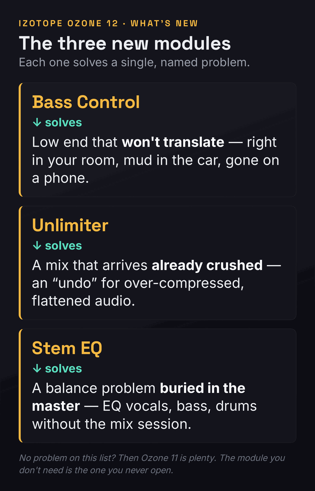
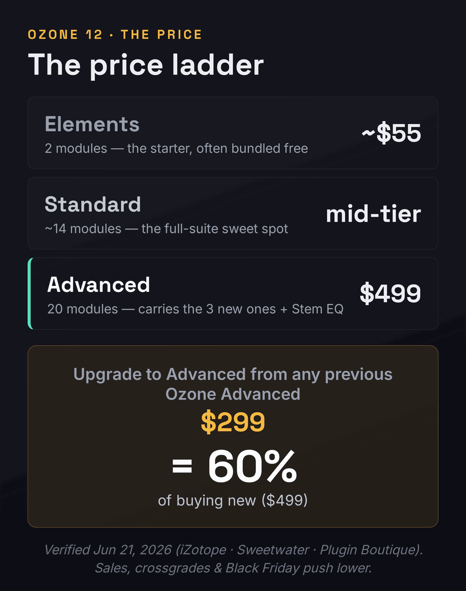

Search “Ozone 12 vs 11” and you will read the same article a dozen times: a tour of the three new modules, a note about the new limiter, a list of the price tiers, and a closing shrug — “depending on your mastering ethos, there might not be enough to tempt you.” That last line is the only honest sentence on most of those pages, and they bury it. So let us start there instead. This is not a question of which version is better. Ozone 12 is plainly the more capable suite; it should be, it is two years newer. The real question — the one with a $299 receipt attached — is whether the specific things Ozone 12 adds solve a problem you actually have. If they do, the upgrade is easy. If they do not, you will pay roughly two-thirds the price of a brand-new license for modules you will open once and never touch again. This page answers that, honestly, with a per-driver scorecard and a straight verdict on price.
Upgrade from Ozone 11 ($299 from any previous Advanced) only if a named new module fixes a real problem: you master crushed, over-limited bounces (Unlimiter), you fight low end that won’t translate (Bass Control), or you regularly fix balance at the master (Stem EQ). Stay on Ozone 11 if it already covers your work — there is no functional cliff, and it keeps working. Buy Ozone 12 new ($499 Advanced, $55 Elements) if you own no Ozone and master your own tracks. And skip Ozone entirely if a stock DAW mastering assistant already gets you there. There is deliberately no single “winner score” below: for an upgrade, that number would be a lie.
What actually changed in Ozone 12
iZotope released Ozone 12 in the autumn of 2025, two years after Ozone 11 landed in 2023. That cadence matters to the decision, so hold onto it: iZotope ships a major Ozone roughly every two years, which means Ozone 13 is unlikely before 2027 at the earliest, and Ozone 11 will keep running and keep being supported through the current operating-system cycle. Nothing about your existing setup breaks the day 12 ships. You are not on a clock. That single fact — no cliff, no forced march — is what lets an 11 owner treat this as an optional, problem-driven purchase rather than a panic upgrade, and it is the first thing the new-module tour on every other page conveniently leaves out.
With that framing in place, here is the genuine substance of the release. Ozone 12 Advanced ships twenty modules (twenty-one plug-ins if you count the “mothership” hub that hosts them), and three of those modules are brand new. Bass Control is a dedicated low-end module that analyzes and shapes the bass so it holds together across systems — the car, the club, the laptop — rather than collapsing or booming depending on where it is played. Unlimiter is the headline trick: an “undo” for over-compressed audio that uses machine learning to reintroduce transients and dynamics into a mix that was crushed before it reached you. Stem EQ separates a finished stereo master into vocals, bass, drums, and everything else, and lets you equalize each one without re-opening the mix session. Those three are the real reason the version number moved, and we will map each to the problem it solves in the next section, because that mapping is the upgrade decision.

Beyond the three new modules, the rest of the changes are real but incremental, and it helps to separate them from the headliners. The Maximizer — Ozone’s fan-favorite limiter — gains a new IRC 5 mode, billed as the most advanced limiting algorithm in the suite, designed to push loudness harder with fewer of the pumping and distortion artifacts that come with squeezing a master. The Master Assistant, the AI feature that listens to your track and proposes a starting chain, becomes genuinely customizable for the first time: a new Custom flow lets you set a target genre or load up to three of your own reference tracks, choose a LUFS target, toggle which modules the Assistant is allowed to use, and extend its listening time up to a full minute for a more considered result. The Stabilizer, Ozone’s adaptive tonal-EQ module, adds 25 new genre targets. And Stem Focus, the stem-separation feature introduced back in Ozone 11, is rebuilt on new neural networks for cleaner splits with fewer artifacts. Under the hood, Ozone 12 is Apple-silicon native and 64-bit only, and — worth flagging if you run an older template — VST2 is no longer supported. If you want the version-3 context for any of this, our Ozone 12 review judges the suite on its own terms, and the Ozone 11 review does the same for the incumbent.
It is worth dwelling on the Master Assistant change, because it is the upgrade an Ozone 11 owner is most likely to feel every single day, even though it is not one of the three headline modules. In Ozone 11, the Master Assistant was essentially a black box: it listened, it proposed a chain, and you accepted or rejected the whole thing. Ozone 12’s Custom flow turns that one-shot suggestion into a brief you write. You tell it the genre or hand it up to three of your own reference tracks; you set the exact LUFS target you are mastering to; you decide which modules it is allowed to reach for and which to leave out; and you can let it listen for up to a full minute rather than a few seconds, which produces a more considered starting point on complex material. For an engineer who already knows roughly what they want and just wants a fast, sane starting chain shaped to their intentions, that is a real quality-of-life upgrade — less undoing the Assistant’s guesses, more starting where you meant to. If you lean on assisted workflows at all, this is the change to weigh.
It is worth being precise about what Ozone 11 already gave you, because the upgrade math is really a comparison of deltas, not a comparison from zero. Ozone 11, in 2023, was itself a substantial release: it introduced the Clarity module’s psychoacoustic processing, the first Stem Focus separation, Transient/Sustain control, Upward Compress, and Assistive Vocal Balance. If you own Ozone 11 Advanced, you already have a complete, modern, professional mastering suite — a full EQ, dynamics, imaging, a Maximizer, Match EQ, the vintage-modeled modules, and Tonal Balance Control to meter against genre targets. You are not upgrading from a toy. You are deciding whether a handful of new tools is worth $299 on top of a suite that already does the core job well. Keep that in view as we go: the question is never “is Ozone 12 good” — it is “is the gap worth paying for, for the work I actually do.”
The three new modules, mapped to a problem you actually have
Here is the move that separates a useful upgrade guide from a feature list: instead of describing each new module and letting you guess whether you need it, work backwards from the problems. A mastering tool only earns its price when it solves something you hit regularly. So read the three problems below and ask, honestly, how often each one shows up in your sessions. If the answer is “constantly,” the upgrade is paying for itself. If the answer is “almost never,” you have just saved $299.
Problem one: the mix you have to master is already crushed. This is the everyday reality for anyone mastering other people’s work — the bounce arrives slammed against a limiter, the transients gone, the life squeezed out of it, and traditionally there is nothing you can do but work with the flattened thing you were handed. Unlimiter is built for exactly this: it uses machine learning to estimate and reintroduce the dynamics that were destroyed, effectively giving you an undo on someone else’s over-compression. If you regularly master client mixes, stems from collaborators, or your own older bounces that were printed too hot, this is the single most compelling reason in the entire release to upgrade — there is no equivalent in Ozone 11, and no graceful workaround. If, on the other hand, you only ever master your own freshly-bounced, un-limited mixes, you will admire Unlimiter in the demo and then never reach for it, because you never create the problem it fixes.
Problem two: your low end will not translate. Bass that sounds right in your room turns to mud in the car and disappears on a phone — the oldest, most frustrating problem in mastering, and the hardest to fix by eye because you cannot trust your own monitoring. Ozone 11 gave you tools that touch this (Low End Focus, the EQ, the Maximizer), but Ozone 12’s Bass Control makes it a dedicated, analysis-driven module aimed squarely at consistency across playback systems. If low-end translation is a recurring headache — if you produce bass-heavy genres, or you simply do not have a treated room and a sub you trust — this is a genuine, daily-use upgrade. If your low end already behaves, because your monitoring is solid or your genre is sparse down low, Bass Control is a nicety, not a need. A blunt gut-check here: our free Mix Fingerprint Analyzer will show you how your low end actually sits against reference targets, which is a cheaper way to find out whether you have this problem than buying a module to fix it.
![An upgrade decision flow for Ozone 12 versus Ozone 11. The flow asks three yes-or-no questions: Do you master crushed or over-limited mixes? Do you fight low end that will not translate across systems? Do you regularly fix balance problems at the master stage? If you answer yes to one or more, the path leads to Upgrade to Ozone 12. If you answer no to all three but own no Ozone, the path leads to Buy Ozone 12 new or consider a stock DAW assistant. If you own Ozone 11 and answer no to all three, the path leads to Stay on Ozone 11.](../images/ozone-12-vs-11-upgrade-decision.png)
Problem three: the balance is wrong and the mix session is gone. The vocal sits a hair too bright, the kick is a touch too heavy, but you are at the master stage and you do not have — or do not want to reopen — the multitrack. Stem EQ separates the finished stereo file into vocals, bass, drums, and “other,” and lets you equalize each one in place. Reviewers who tested it found it genuinely useful for mainstream material, especially for taming or brightening a vocal and for shaping bass and drums, while noting the honest limit: you get four stem buckets, not infinite separation, and on sparse or unusual material (soundtrack cues with no vocal, for instance) it has less to grab. If “I wish I could fix the vocal level without the session” is a sentence you say monthly, Stem EQ alone may justify the upgrade. If you always master from your own sessions and can simply go back and fix the mix, it is a convenience you will rarely need. This capability overlaps with dedicated stem mastering workflows, and if stems are central to how you work, that guide is worth reading alongside this one.
Notice the pattern across all three: every new Ozone 12 module is a rescue tool — it fixes a problem in audio that is already imperfect. That is not an accident, and it tells you who Ozone 12 is really for. It is for engineers who master other people’s mixes, or their own difficult ones, where the material arrives flawed and the master stage is where the flaws have to be fixed. If you are a producer mastering your own clean bounces, you have the luxury of fixing problems upstream, in the mix, where they belong — and the three headline modules, brilliant as they are, mostly solve problems you can prevent. That is the quiet truth that turns “Ozone 12 is amazing” into “Ozone 12 is amazing, and you might not need it,” and it is why the honest recommendation depends so heavily on what kind of work lands on your desk.
Make it concrete with a single session, because that is where the upgrade either earns its money or does not. A client sends you a finished stereo bounce for mastering. It arrives loud and flat — they limited it themselves before exporting — and the vocal is a touch harsh while the low end balloons on your subs. In Ozone 11 you would do your best with EQ and dynamics on the flattened file and accept the compromises. In Ozone 12 the same session has three new moves: Unlimiter to credibly restore some of the dynamics the client crushed, Stem EQ to pull a couple of decibels off the vocal’s harsh region without touching the rest, and Bass Control to settle the low end so it survives the car and the phone. None of those was possible at the master stage before. If that paragraph describes a session you have monthly, the upgrade is already paying for itself; if you never receive other people’s flattened bounces because you only master your own clean exports, you just watched three tools solve problems you do not have.
How 11 and 12 score, driver by driver
A single overall score — “Ozone 12: 8.7, Ozone 11: 7.9” — would be worse than useless for an upgrade decision, because it would tell you 12 wins (of course the newer version wins) without telling you whether it wins where you need it to. So the scorecard below is broken into the actual decision drivers, scored out of ten for each version, with the gap explained in plain terms. Read down the column for the rows that match your work, ignore the rows that do not, and let the spread on your rows decide. The scores are calibrated, not round: a 0.2 gap means “barely worth noticing,” a 2-point gap means “this is a real capability 11 simply does not have.”
| Decision driver | Ozone 11 | Ozone 12 | The gap, in plain terms |
|---|---|---|---|
| Rescuing a crushed master (Unlimiter) | 6.7 | 8.9 | The widest gap on the board. Ozone 11 has nothing like Unlimiter; if you master over-limited mixes, this row alone can justify the price. |
| Low-end translation (Bass Control) | 7.3 | 8.6 | 11 leans on Low End Focus and EQ; 12 makes consistency-across-systems a dedicated, analysis-driven module. |
| Fixing balance at the master (Stem EQ) | 7.5 | 8.8 | 11 can isolate a stem with Stem Focus; 12 lets you EQ four stems in place without the session. |
| Limiter loudness + clarity (IRC 5) | 8.2 | 8.9 | Both are excellent. IRC 5 is a real but incremental step over IRC IV — you will hear it on hard-pushed masters, not gentle ones. |
| Master Assistant control (Custom flow) | 7.6 | 8.7 | The upgrade most 11 owners will feel daily: set goals, pick modules, load references, instead of accepting a black-box chain. |
| Tonal targeting (Stabilizer genres) | 7.9 | 8.4 | Same module, 25 more genre targets. Helpful if you switch styles often; marginal if you live in one genre. |
| Stem separation quality (Stem Focus) | 7.7 | 8.3 | Same feature, new neural nets in 12 for cleaner splits and fewer artifacts. |
| Value for an engineer who already owns 11 | 8.7 | 7.8 | Deliberately inverted. You already own 11; the $299 buys deltas you may use rarely. For a current owner, 11 is the better value until a problem above bites. |
That last row is the one most comparison pages would never print, so let us defend it openly. Every other row scores capability, and on capability Ozone 12 wins every time — it is the newer, deeper suite. But value is not capability; value is capability per dollar you have not already spent. An engineer who owns Ozone 11 has already paid for a complete mastering suite, and the marginal $299 only buys the deltas in the rows above. If those deltas land on problems you face weekly, the value flips to 12 immediately. If they do not, Ozone 11 remains the smarter place for your money to stay, and that is not a knock on Ozone 12 — it is just honest accounting. This is the same logic we applied to the previous jump in Ozone 10 vs 11, and it is the logic any plugin upgrade deserves.
Pay attention to the size of each gap, because the small ones are as informative as the large ones. The IRC 5 and Stem Focus rows score the tightest spreads on the board — roughly half a point — and that is deliberate: both are “same feature, better engine” upgrades rather than new capabilities. Ozone 11 already has an excellent limiter and already does stem separation; Ozone 12 makes each modestly better. If your reason for upgrading is “I want a slightly cleaner limiter,” the scorecard is quietly telling you that reason is too thin to spend $299 on. The wide gaps — Unlimiter at over two points, Stem EQ and Bass Control well over a point — are where Ozone 12 does something Ozone 11 cannot, and those are the only rows that justify the price on their own. Spend your attention on the spreads, not the absolute scores.
One more note on how to read these numbers. They are editorial judgments built from iZotope’s documented feature set and from independent reviews of Ozone 12, not from a first-party listening test we ran in a lab — we are explicit about that because a chart implying a measurement we did not take would be worse than no chart. Where the scores reflect sound quality (the IRC 5 row, the Stem Focus row), treat them as “this is the consensus and the documented design,” not “we A/B’d it on a null test.” The capability rows — does the module exist, what does it do — are factual. The quality deltas are informed estimates, and the right way to confirm them for your own ears is the free Ozone 12 demo, which we recommend over any chart, ours included.
The verdict: upgrade, stay, or skip
There is no single winner here because the right answer genuinely depends on which of two people you are. The two cards below are the decision, framed as a choice rather than a score. Find the one that describes your work, and the call follows.
Upgrade if You master crushed or client mixes (Unlimiter), fight low end that won’t translate (Bass Control), or routinely fix balance at the master without the session (Stem EQ) — or you simply want a controllable Master Assistant you drive instead of accept.
Worth knowing The upgrade is $299 from any previous Advanced — about 60% of buying new. Real, but not a token sum. Demo it on your own tracks first.
Verdict The clear buy for working engineers handling imperfect material, and an easy yes if even one new module hits a weekly problem.
Stay if Ozone 11 already covers your work, you master mostly your own clean bounces, and none of the three new modules maps to a problem you hit. There is no functional cliff — 11 keeps working and stays supported.
Watch out Don’t upgrade on fear of being “behind.” The two-year cadence means no Ozone 13 until ~2027; you lose nothing by waiting for a problem to make the case.
Verdict For a current 11 owner with no matching problem, staying is the smarter use of $299. Revisit when a real need appears.
Skip Ozone if you are a casual or hobbyist producer whose stock DAW mastering assistant (Logic’s, Ableton’s, or a one-time-fee rival) already gets your tracks loud and balanced enough for the platforms you release to. We will make that case fairly in its own section below — an honest upgrade guide has to admit when the honest answer is “neither version, not yet.”
Is $299 to upgrade defensible?
The loudest complaint about this release has nothing to do with the software and everything to do with the bill, so let us put the real numbers on the table. As of June 2026, a fresh Ozone 12 Advanced license is $499 direct from iZotope. The upgrade from any previous Ozone Advanced, including Ozone 11, is $299. Do the division: the upgrade costs exactly 60% of buying the thing new. That is the number every cookie-cutter page lists and none of them confronts. Sixty percent of full price to move one version forward is steep — steeper than most plugin upgrades in this category — and pretending otherwise does you no favors.

It gets sharper when you look at the upgrade policy, not just the sticker. Ozone 12 launched only a short window after some buyers had paid to move up to Ozone 11 — and iZotope’s grace period for a free or credited bump to the new version is reportedly about one week, against an industry norm of thirty to sixty days. The practical result, reported by more than one buyer, was paying the upgrade fee twice in quick succession: once to reach 11, then again days later to reach 12, with no credit for the timing. If you are weighing this upgrade, that policy is part of the honest picture. It is also a reason to never buy an Ozone upgrade at full freight right before a likely release window — the two-year cadence is predictable enough that patience around launch season, and around Black Friday, routinely saves real money.
There are also cheaper routes to Ozone 12 than the headline upgrade price, and they are worth checking before you click buy. iZotope frequently offers crossgrades from elsewhere in its ecosystem — if you own RX, Nectar, Neutron, or a Music Production Suite subscription, your upgrade or crossgrade price to Ozone 12 may be lower than the standard $299, so log into your iZotope account and look at the personalized price rather than assuming the public number applies to you. Seasonal sales move these figures substantially: Ozone routinely drops during Black Friday, the spring and summer sales, and bundle promotions, and Plugin Boutique and Sweetwater often run their own discounts and add free plug-ins on top. Because the two-year release cadence is predictable, there is rarely any urgency to buy at full price — if your problem is not on fire today, waiting for the next sale is the rational move, and it can quietly turn a $299 upgrade into a good deal.
So is $299 defensible? It depends entirely on the rows of the scorecard that apply to you, which is the whole point of this page. For an engineer who masters client mixes daily, Unlimiter alone can pay for the upgrade in saved rescue time on the first crushed bounce — $299 is a rounding error against an hour saved per project. For a hobbyist who masters one clean original a month, $299 buys polish on problems they rarely have, and the money is better spent on monitoring, room treatment, or simply more practice. The price is not “fair” or “a rip-off” in the abstract; it is fair for the engineer with the problem and a poor deal for the one without it. Anchor the decision to your work, not to the marketing, and the price answers itself. If you want the fundamentals that make any of these tools effective, our guides to how to master a song and mastering for streaming are the groundwork, and LUFS explained covers the loudness targets every one of these modules is ultimately serving.
Elements, Standard or Advanced — which tier do you actually need?
The upgrade question assumes you want Advanced, but most of the new headline modules live in the Advanced tier, so it is worth being clear about what each tier buys before you spend. Ozone 12 comes in three editions, and the jumps between them are not evenly sized. Elements (around $55) is a two-module starter — really just enough to get a quick assisted master and learn the workflow, and frequently bundled free with interfaces, DAWs, or Splice deals, which makes it the cheapest legitimate way into the ecosystem. Standard (a mid-tier price that moves with sales) jumps to roughly fourteen modules and is, for a great many working engineers, the real sweet spot: the full corrective and tonal toolkit without the most specialized extras. Advanced ($499 new) is the complete twenty-module suite, and it is the only tier that carries the three new headliners plus the specialist tools.
The honest dividing line most pages blur: the leap from Elements to Standard is the big one in raw capability — you go from a starter to a full mastering suite — while the leap from Standard to Advanced is narrower and aimed at specific needs. Advanced is the tier you want if you specifically need Master Rebalance (re-leveling vocals, drums, or bass on a finished mix), the Spectral Shaper for surgical resonance control, or, in Ozone 12, the three new modules and Stem EQ. If you do not reach for those specialist tools, Standard covers the day-to-day workflow for indie and pop releases without the Advanced premium. So a quieter recommendation hides inside the upgrade question: some Ozone 11 Advanced owners who never touch the specialist modules would be better served, on their next purchase, by Ozone 12 Standard at the lower price — the only catch being that Standard does not include the very new modules (Unlimiter, Stem EQ) that might have tempted them to upgrade in the first place. Match the tier to the tools you genuinely use, not to the one with the most modules. If you are still mapping out where Ozone sits among the alternatives, our roundup of the best plugins for mastering places every tier in context, and the Neutron guide covers the mixing-stage companion many Ozone users pair it with.
For an existing Ozone 11 Advanced owner specifically, the tier question collapses into a single line: your upgrade keeps you at Advanced for $299, there is no “downgrade to Standard” discount, so the tier decision is really just the upgrade decision in disguise. Where the tiers matter more is for the reader who owns no Ozone yet and is deciding where to enter. If that is you, resist the instinct to buy the biggest box. Start by checking whether you already have Ozone Elements bundled free with an interface, a Splice plan, or a DAW promotion — an enormous number of producers own Elements without realizing it — and learn the assisted-mastering workflow on it first. Only step up to Standard or Advanced once you can name the specific module Elements is missing for your work. Buying Advanced before you have outgrown Elements is the most common way to overspend in this product line, and it is the same mistake, one tier down, as an 11 owner upgrading to 12 for modules they will never open.
You might not need Ozone at all
An upgrade guide that never questions the premise is just a sales sheet, so here is the question the incumbents avoid: do you need Ozone in the first place? For a serious mastering engineer the answer is an easy yes — Ozone is the in-DAW standard for good reason, and the depth of control it offers is the job. But for a large slice of the people Googling “Ozone 12 vs 11,” the honest answer is that a stock mastering assistant has quietly closed most of the gap. Logic’s Mastering Assistant and Ableton’s built-in tools, plus a wave of one-time-fee and AI rivals, will get a clean mix loud, balanced, and streaming-ready for casual release without any Ozone purchase at all. If you make music as a hobby, release to streaming platforms that normalize loudness anyway, and do not master for clients, the “right” Ozone might be no Ozone.
This is not an argument against Ozone — it is an argument for spending where the return is highest. If you have never run a master through anything but your DAW’s stock chain, the leap to any Ozone is bigger and more worthwhile than the leap from 11 to 12, and you should be reading our what is mastering primer and our best AI mastering services roundup before you spend on the Advanced tier. And if you have been mastering by ear with stock tools and getting acceptable results, the most honest recommendation on this entire page is to try the free Ozone 12 demo on a track you have already mastered yourself, compare the two blind, and only buy if the difference is one you can actually hear and would actually pay for. The single biggest mistake in this corner of the market is buying the expensive tool before you have a problem it solves — whether that tool is Ozone 12 or any of its rivals. For the AI-assisted end of the field specifically, AI mastering explained and our LANDR vs Ozone and iZotope RX vs Waves Clarity comparisons map the alternatives Ozone is quietly competing with.
It is worth naming the specific alternatives, because “a stock assistant” is vaguer than the real choices. On Mac, Logic Pro’s Mastering Assistant produces a genuinely competent, loudness-targeted master with one click and zero extra cost, and for a lot of streaming-bound hobby releases it is simply enough. Across DAWs, one-time-fee mastering plug-ins and channel-strip masters cost a fraction of Ozone and never charge you again. And the AI mastering services — the LANDR-style web tools and their rivals — will master a track for a few dollars or a subscription, trading control for speed and convenience. The honest trade against all of them is the same: Ozone gives you far more control and a far higher ceiling, and you pay for that depth in both money and the time it takes to learn. If you will use the control, Ozone wins easily. If you would just click “master” and accept the result anyway, you are paying for a depth you will never reach, and one of the cheaper routes is the smarter buy — the same problem-versus-price logic that governs the 11-to-12 upgrade itself.
Try it yourself: 3 exercises
- Pull up the last five mixes you mastered — client bounces, collaborator stems, or your own older exports.
- Drop a loudness meter or our Mix Fingerprint Analyzer on each and note the dynamic range. Anything already slammed flat before mastering is a candidate for Unlimiter.
- Count how many of the five arrived crushed. If it is three or more, the Unlimiter row of the scorecard is your row, and the upgrade case is strong.
- If none of them arrived crushed because you always master your own clean bounces, you have just learned that the headline Ozone 12 module solves a problem you do not have.
- Install the free Ozone 12 demo. Take a track you already mastered in Ozone 11 and keep that 11 master as your reference.
- Re-master the raw mix in Ozone 12 using the new Custom Master Assistant flow — set a genre or load a reference, pick a LUFS target, and let it build a chain.
- Null-test or blind A/B the two masters at matched loudness. Where does 12 actually sound different, and is the difference one you would pay $299 for?
- Be ruthless: if you cannot reliably pick the 12 master in a blind test on your own music, the upgrade is not for your current work — no matter how good the demo reel sounded.
- Run Unlimiter on a deliberately over-limited bounce and measure how much dynamic range it credibly restores before artifacts appear.
- Run Bass Control on a bass-heavy mix, then check translation on three systems — monitors, car, phone — against the same mix without it. Did consistency actually improve?
- Use Stem EQ to brighten a vocal and tame a kick on a finished stereo file, then compare to fixing the same issues in the original mix session. How close did the master-stage fix get, and how much time did it save?
- Tally which of the three earned its keep on your material. That tally, not any review score, is your real verdict — and the honest way to decide whether to keep the demo or buy.
Frequently asked questions
Only if a named new module solves a problem you actually have. Upgrade if you master crushed or over-limited mixes (Unlimiter), fight low end that will not translate across systems (Bass Control), or routinely fix balance at the master stage without the original session (Stem EQ). If Ozone 11 already covers your work — and especially if you master mostly your own clean bounces — staying on 11 is the smarter use of the $299, because there is no functional cliff and 11 keeps working and stays supported.
As of June 2026, the upgrade to Ozone 12 Advanced from any previous Ozone Advanced license, including Ozone 11, is $299, against $499 for a brand-new Advanced license — so the upgrade is exactly 60% of buying new. Crossgrades, Black Friday, and seasonal sales push these numbers lower, so check iZotope, Sweetwater, and Plugin Boutique before buying. Prices are volatile and promo-dependent; verify the current figure on the vendor page rather than trusting any guide, including this one.
Ozone 12 Advanced adds three brand-new modules: Bass Control, which analyzes and shapes low end for consistent translation across playback systems; Unlimiter, which uses machine learning to reintroduce dynamics into over-compressed, crushed audio; and Stem EQ, which separates a finished stereo master into vocals, bass, drums, and other so you can EQ each in place. Beyond the new modules, Ozone 12 adds the IRC 5 Maximizer limiting mode, a customizable Master Assistant Custom flow, 25 new Stabilizer genre targets, and improved Stem Focus separation built on new neural nets.
No. There is no functional cliff. Ozone 11 keeps working exactly as before, and iZotope continues to support older versions through the current operating-system cycle. Because iZotope ships a major Ozone roughly every two years (11 in 2023, 12 in 2025), an 11 owner is not on any clock — you can wait for a real problem to justify the upgrade rather than buying on fear of being left behind. The next version is unlikely before 2027.
The biggest jump in capability is Elements (about $55, two modules) to Standard (around fourteen modules), which takes you from a starter to a full mastering suite. The jump from Standard to Advanced ($499, twenty modules) is narrower and aimed at specialists who need Master Rebalance, Spectral Shaper, or, in version 12, the three new modules and Stem EQ. For a lot of indie and pop work, Standard is the sweet spot. Only buy Advanced if you specifically need its specialist tools — including the new modules that might have prompted the upgrade in the first place.
Maybe not. Stock assistants like Logic’s Mastering Assistant and Ableton’s tools, plus a wave of one-time-fee and AI rivals, will get a clean mix loud and balanced enough for casual streaming release, where platforms normalize loudness anyway. If you make music as a hobby and do not master for clients, the honest answer may be that you do not need Ozone yet. For a serious or professional engineer the depth of control still makes Ozone the in-DAW standard. The test is simple: demo Ozone 12 against your stock-mastered track, blind, and buy only if you can hear and would pay for the difference.
It is a real step, but an incremental one. The Maximizer’s new IRC 5 mode is billed as iZotope’s most advanced limiting algorithm, designed to push loudness harder with fewer pumping and distortion artifacts. You are most likely to hear the difference on masters you drive hard toward high loudness; on gentle, dynamic masters the gap over Ozone 11’s limiter narrows considerably. If aggressive loudness is central to your genre, the IRC 5 row of the scorecard matters to you; if it is not, the limiter alone is a weak reason to upgrade. Our guide to using a limiter covers the fundamentals that matter more than the algorithm version.
Probably not, and this is a real complaint about the release. iZotope’s grace period for a free or credited bump to a newly-released version is reportedly about one week, against an industry norm of thirty to sixty days. Buyers who upgraded to Ozone 11 shortly before Ozone 12 launched reported having to pay the upgrade fee again with no credit. The lesson: never buy an Ozone upgrade at full price right before a likely release window. The two-year cadence is predictable enough that waiting around launch season, and around Black Friday, routinely saves money.